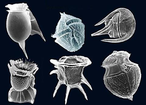
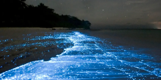
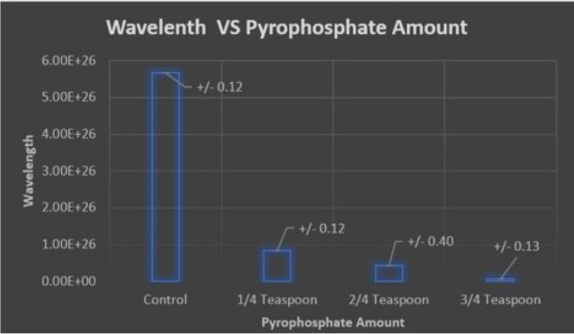
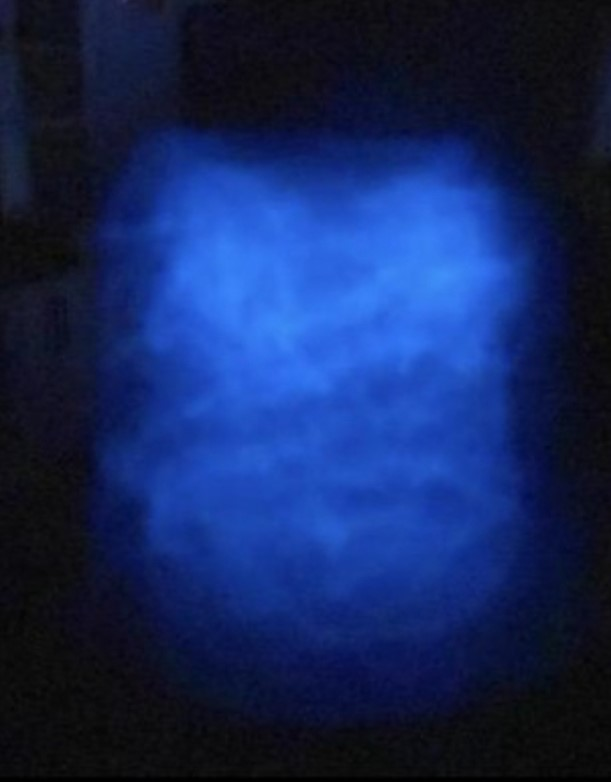
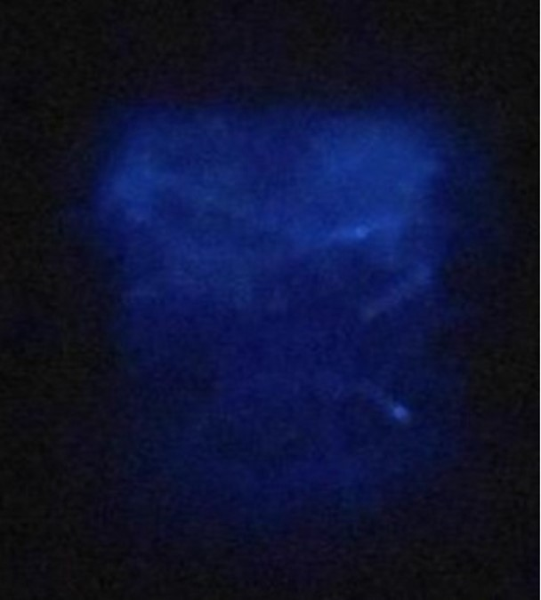
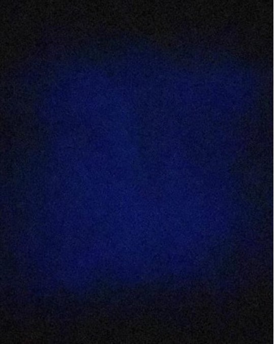
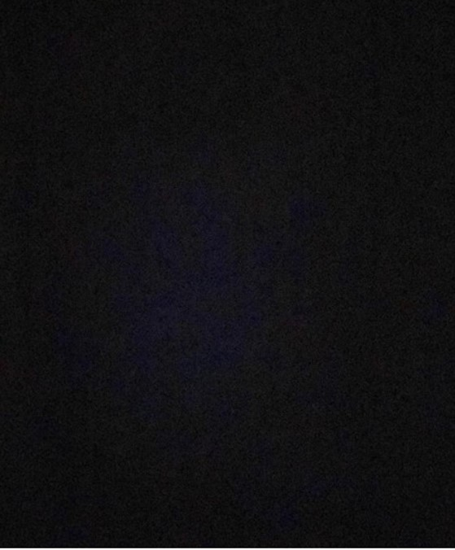

Abstract
As the biochemical light emission is given off by living organisms containing luciferin, bioluminescence is abundant throughout 90% of the deep sea. Luciferin is the compound that produces the light, serving as the substrate that binds to the luciferase enzyme at its active sight. The arrangement of luciferin molecules will directly impact the color of light that results. This bond is only successful when luciferin is oxidized, and the byproduct synthesized is oxyluciferin [1]. In a P-O-P linkage, it consists of two phosphorus atoms and an oxygen. To summarize a key part of the glowing process, when d-luciferin is activated after interacting with Mg-ATP energy to produce a d-luciferyl adenylate and a pyrophosphate, its concentration remains low and has minimal effects. This experiment aims to show pyrophosphate will have a negative effect on the dinoflagellates’ ability to produce their bioluminescence glow. Varying concentrations of pyrophosphate exposed to the algae will be compared to a control that has no pyrophosphate.
I. INTRODUCTION
Bioluminescence is the biochemical light emission given off by living organisms containing luciferin. From microscopic cells to sharks, there is a vast range of luminescent vertebrates. While it serves as a defense mechanism against predators or can serve as a way to attract prey, over 90% of animals in the deep ocean have this capability. Namely, the most abundant vertebrate on Earth is a deep-sea fish known as the bristlemouth, which is a small bioluminescent fish.

Figure 1.1: Structure of luciferin
As unicellular protists, dinoflagellates can be observed under a light microscope. Typically, they have a golden-brown plasmid color, and are assimilative cells with a noticeably indented waist, and proportionally large nucleus housing distinctly visible chromosomes. It consists of 25-35% of the average cell. Their name is derived from the Greek word “dinos” that means “whirling”- describing their unique swimming pattern, and the Latin word “flagellum” which translates to “a whip”. They are traditionally known for this forward spiral method. Currently, there are approximately 300 freshwater dinoflagellate species known worldwide. They are single cells either in plankton or attached to algal filament substrates. Dinoflagellate taxa is known as “thecate”/ covered with cellulose armor such as that found in plants. Historically, they are known for this emergence as few species are known to consist of thin thecal plates that are difficult to observe.
Figure 1.2: Microscopic image of several types of dinoflagellates
Best known as the source of red tides leading to the death of fish and other marine life, dinoflagellates contain toxins that have also led to human illnesses. For example, they have caused paralytic shellfish poisoning, neurotoxic shellfish poisoning, diarrhetic shellfish poisoning, and ciguatera. This information pertains to marine dinoflagellates as there is little known about the effects of freshwater species; however, they appear to exhibit photo trophy, heterotrophy, and fish parasitism like their marine counterparts. These dinoflagellate red tides are caused by species known as the “Florida Red Tide” that cause damage along the northern US coastline. These contribute to negative ecological, public health effects, and economic categories. As single-celled eukaryotic plankton, they do consist of plant-like attributes such as the ability to carry out photosynthesis and the presence of cellulose-containing walls. Since they are phagotrophic (feeding on prey or hosts) dinoflagellates also have animal-like features.
As a type of chemiluminescence that occurs inside of a living organism, bioluminescence is known as a “cold light”, meaning less than 20% of the light produces thermal radiation [3]. Luciferin is the compound that produces the light, serving as the substrate that binds to the luciferase enzyme at its active sight. This bond is only successful when luciferin is oxidized, and the byproduct synthesized is oxyluciferin [1]. For example, the average dinoflagellate flash of light lasts about a tenth of a second and consists of approximately 100 million photons [2]. A blue-green color results, typical with bioluminescence lighting the oceans as most marine organisms are only sensitive to that range of color on the visible light spectrum and thus are not able to process violet, yellow, and red colors to the same extent. This enzyme-catalyzed reaction is reversible, and pyrophosphate can inhibit the success. In a P-O-P linkage, it consists of two phosphorus atoms and an oxygen. To summarize a key part of the glowing process, when d-luciferin is activated after interacting with Mg-ATP energy to produce a d-luciferyl adenylate and a pyrophosphate, its concentration remains low and has minimal effects. Increasing its concentration will allow it to act as a noncompetitive inhibitor, bonding to the allosteric site of the enzyme and preventing the catalyzing reaction that emits light products. This experiment aims to show pyrophosphate will have a negative effect on the dinoflagellates’ ability to produce their bioluminescence glow. While the null hypothesis states that varying amounts of pyrophosphate will not impact the ability of the bioluminescent dinoflagellates to emit light, the alternate hypothesis this experiment proves claims that as more pyrophosphate is exposed to the dinoflagellates, the light produced will become less visible.
Figure 1.3: Bioluminescence by Fluorescent Plankton
This experiment will be measured in light photons using measurements from the red, green, and blue light in pixels to measure the energy of a wave. For measurement purposes, this will be converted to joules and divided by Planck’s constant, 6.626 x 10-34, in order to obtain the wave frequency. Finally, to get wavelength, this will be divided by 300,000,000 m/s, also known as the speed of light. While images will depict the effect on the coloring and brightness, this will serve as a quantitative way to determine whether longer wavelengths with lower frequencies are produced or whether shorter wavelengths with higher frequencies are produced. A phone, dinoflagellates, pyrophosphate, beaker for measurement, etc. (outlined in materials) will be utilized to promote efficiency.
II. MATERIALS AND METHODS
Materials
- Dinoflagellates
- LED Light
- Pyrophosphate
- ¼ teaspoon
- ½ teaspoon
- ¾ teaspoon
- iPhone (11)
- 4 Beakers
- Teaspoon measurements
Methods
After Dinoflagellates arrive, keep them in the designated container until adding the pyrophosphate. Shine an LED light 14 inches away from the algae from 10 pm to 10 am. From 10 am to 10 pm, keep the dinoflagellates in a sealed, completely dark container. The CarolinaBlue Company that ships the materials deals with nocturnal algae, so they will be “awake” during the school day for experiments with kids. Repeat for 5-7 days (for the sake of this experiment, it was repeated for 1 full week as recommended in the instructions packet to promote optimal glowing). Measure varying concentrations of pyrophosphate (¼, 2/4, and ¾ teaspoon). Then, remove the container from the algae. Place the pyrophosphate (it will have an instant effect). Finally, shake the algae, capture it with a camera, repeat two more times. However, for control, simply shake and record.
III. RESULTS
- To sum the procedures, varying concentrations of pyrophosphate were added to the mixture of dinoflagellates and the light emission was calculated using the amount of red, green, and blue pixels averaged in each image of the dinoflagellates after the addition of powder. These results were compared to a control with no pyrophosphate and the light emitted was calculated by averaging 300 pixels in each image.
- With each additional ¼ teaspoon, wavelength drastically decreased (Figure 3.1).
- With each ¼ added, frequency increased as the values are inversely proportional (Figure 3.1)
- The control had the highest wavelength.
- The ¾ teaspoon algae had the lowest wavelength and thus highest frequency (Figure 3.1).
- The light emitted reduced with each addition of pyrophosphate.

Figure 3.1. Wavelength Vs. Pyrophosphate Amount. Graph shows 2 standard error of the mean data bars and the bars themselves represent the average wavelength with varying pyrophosphate concentrations. This was calculated using the average lux per image below. Numerical values are shown above
Figure 3.2. Control Without Added Pyrophosphate. Image shows light emitted. One cup of pyrophosphate was shaken at 10 pm (when the species is most active). Average lux is 82.34 lx, average wavelength is 5.68x10^26 m.
Figure 3.3. 1/4 Teaspoon Added Pyrophosphate. Image shows light emitted. One cup of pyrophosphate was added to ¼ teaspoon pyrophosphate and shaken at 10 pm (when the species is most active). Average lux is 31.78 lx, average wavelength is 8.43x10^25 m.
Figure 3.4. 2/4 Teaspoon Added Pyrophosphate. Image shows light emitted. One cup of pyrophosphate was added to ½ teaspoon pyrophosphate and shaken at 10 pm (when the species is most active). Average lux is 22.50 lx, average wavelength is 4.25x10^25 m.
Figure 3.5. 3/4 Teaspoon Added Pyrophosphate. Image shows light emitted. One cup pyrophosphate was added to ¾ teaspoon pyrophosphate and shaken at 10 pm (when the species is most active). Average lux is 9.31 lx, average wavelength is 7.27x10^24 m.
IV. DISCUSSION
As outlined in the graph, the data rejects the null hypothesis that states there will be no significant variation between the varying phosphate amounts. Conversely, the data accepts the alternate hypothesis claiming as more pyrophosphate is exposed to the dinoflagellates, the light produced will become less visible. Light in this experiment was converted to wavelength frequency using an approximate conversion- calculating the likely wavelength due to the presence of red, green, and blue hues in a pixel. It is vital to notate that the frequency of wavelength per second was calculated, which indicates a reverse wavelength. Namely, a higher frequency wavelength will have more energy but shorter waves. While the control in this experiment has an average frequency of 5.68x10-26 waves/second, adding ¼ teaspoon of pyrophosphate makes results 6.73 times shorter, drastically reducing the energy emitted by the algae. With a lack of overlapping data bars throughout the cumulative data’s entirety, it indicates any variations are distinct from one another and cannot be attributed to random chance or sampling error. This means that the byproduct of the luciferin-luciferase catalytic reaction hinders the ability of the dinoflagellates to produce their bright blue glow. Additionally, adding 2/4 teaspoons further decreased this ability by 1.99 times, further proving that by continuously adding more pyrophosphate, the glow will reduce. In this case, doubling the pyrophosphate doubled the negative effects. Lastly, ¾ of a teaspoon was added, and there was 5.84 times less glow. As explained above, this lower frequency means less energy was emitted by their kinetic energy of moving while the container was shaken, but the wavelength itself looks shorter as the values are inverse of each other. Throughout this experiment, the red, blue, and green hues in pixels were recorded for each container of pyrophosphate 300 times which means that outliers had little impact on the average and thus standard deviation, contributing to the extremely small data bars, yet this also points positively to the precision of the experiment. In summation, the graph supports the alternate hypothesis while rejecting the null hypothesis, proving that a byproduct of the bioluminescence chemical reaction will hinder the dinoflagellates’ glow overtime.
REFERENCES
- “Bioluminescence.” National Geographic Society, education.nationalgeographic.org/resource/bioluminescence.
- Fontes R;Fernandes D;Peralta F;Fraga H;Maio I;Esteves da Silva JCG; “Pyrophosphate and Tripolyphosphate Affect Firefly Luciferase Luminescence Because They Act as Substrates and Not as Allosteric Effectors.” The FEBS Journal, U.S. National Library of Medicine, pubmed.ncbi.nlm.nih.gov/18279384/.
- Latz, Mike. “Bioluminescence Questions and Answers.” Latz Laboratory, latzlab.ucsd.edu/bioluminescence/bioluminescence-questions-and-answers/.
- “Luciferin.” Luciferin - an Overview | ScienceDirect Topics, www.sciencedirect.com/topics/chemistry/luciferin.